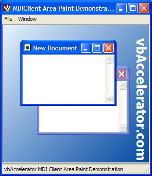
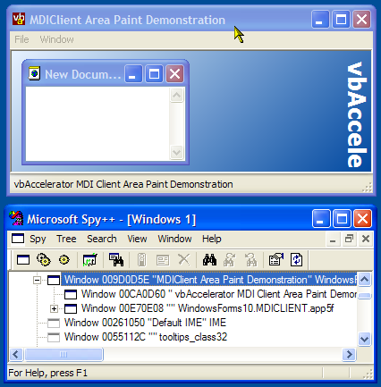

MDIClient Paint Code (34K)
MDIClient Paint Code (34K)
 4 Mar 2003
4 Mar 2003
First Posted

Painting in the MDI Client Area
Find and respond to messages sent to the MDIClient area in .NET Forms.
Although the .NET Framework Form allows you to set a background bitmap or color for the MDI Client area, there's no direct way to draw onto the area to customise it. This sample demonstrates how to create an object which derives from NativeWindow to intercept the messages from the MDI Client area and draw onto it using standard System.Drawing calls.
Finding the MDI Client
An MDI form is actually built using two Windows: the main MDI Window itself and a child window which contains the MDI child forms. This window is termed the "MDIClient" and can be seen if you point a tool like Spy++ at the MDI window:
Spy++ Reveals the MDI Client Window
The class name of the form is given as "WindowsForms10.MDICLIENT.app5f", although I assume that this might change depending on the version of the .NET Framework you're using. By default in the .NET Framework there is no object which provides you access to this Window: the Framework rightly or wrongly assumes that you don't need to do anything with it. However, if you can find the handle to the Window then you create a System.Windows.Forms.NativeWindow object from it, and start responding to its message stream.
Finding The MDI Client
The MDI Client window is a child of the main MDI form, but that means it is at the same level as any other controls (such as Toolbars or Statusbars) which are present on the MDI form's surface. So to find the client we enumerate the child windows of the MDI form and look for one which has a class name containing the word "MDICLIENT" (ignoring case). The code to do this is as follows:
using System.Runtime.InteropServices;
using System.Text;
using System.Windows.Forms;
private delegate int EnumWindowsProc(IntPtr hwnd, int lParam);
[DllImport("user32")]
private extern static int EnumChildWindows (
IntPtr hWndParent,
EnumWindowsProc lpEnumFunc,
int lParam);
[DllImport("user32", CharSet = CharSet.Auto)]
private extern static int GetClassName (
IntPtr hWnd,
StringBuilder lpClassName,
int nMaxCount);
private void GetWindows(
IntPtr hWndParent)
{
EnumChildWindows(
hWndParent,
new EnumWindowsProc(this.WindowEnum),
0);
}
///
/// The enum Windows callback.
///
/// Window Handle
/// Application defined value
/// 1 to continue enumeration, 0 to stop
private int WindowEnum(
IntPtr hWnd,
int lParam)
{
StringBuilder className = new StringBuilder(260, 260);
GetClassName(hWnd, className, className.Capacity);
if (className.ToString().ToUpper().IndexOf("MDICLIENT") > 0)
{
// stop
hWndMdiClient = hWnd;
return 0;
}
else
{
// continue
return 1;
}
}
A more detailed look at finding windows is provided in the article Enumerating Windows.
Getting at Messages From a Window
Normally, the .NET Framework makes it easy to access the message stream for anything that's based on a Windows window: the base Control class includes a virtual WndProc method that provides access to the message stream. However, you can get at this functionality for any arbitrary Window handle (provided the window has been created within the application's process) using the NativeWindow class provided as part of the System.Windows.Form namespace. Once the NativeWindow class has been assigned to a window handle (using the AssignHandle method) then it also provides a virtual WndProc method.
Using this class allows us to easily provide a class which connects to an MDI client and allows the caller to respond to messages passed to the MDI client.
Wrapping it Up: The MDIClientWindow Code
The MDIClientWindow code provided in the download provides reusablable code you can use to mess around with MDI Client messages. There are two components in the code:
- The MDIClientWindow class
This class extends NativeWindow in order to override the WndProc method. Whenever it calls, the class notifies the owner of the class through the IMDIClientNotify interface of the message. The client can then choose to process or ignore the message. - The IMDIClientNotify Interface
This interface contains a single WndProc message interface. Using an interface to call the client allows for better performance than using events, and provides flexibility as to which class responds to the messages.
To hook up the object to an MDI form, first you implement the IMDIClientNotify interface and then instantiate an instance of the MDIClientWindow class:
using System;
using System.Collections;
using System.ComponentModel;
using System.Data;
using System.Drawing;
using System.Windows.Forms;
using vbAccelerator.Components.Win32;
namespace YourAppNamespace
{
public class YourMDIForm :
System.Windows.Forms.Form,
IMDIClientNotify
{
///
/// Class to hold the MDI Client
///
private MDIClientWindow mdiClient = null;
public YourMDIForm
{
//
// Required for Windows Form Designer support
//
InitializeComponent();
// Add a form Load event handler (if one hasn't
// been added in the designer already) so we
// can hook up the MDIClient notifications
//
this.Load += new EventHandler(this.frm_Load);
}
// InitializeComponent, Dispose omitted for clarity
private void frm_Load(object sender, EventArgs e)
{
mdiClient = new MDIClientWindow(
this, // Object implementing IMDIClientNotify
this.Handle // MDI form handle
);
}
public void WndProc(ref Message m, ref bool doDefault)
{
// process message here. Set doDefault = false
// to prevent the base window procedure from being
// called.
}
}
}
Using MDIClientWindow to Paint In the MDI Client
In order to paint in the MDI Client area, you need to handle at two or three Windows messages. The basic messages involved in painting are WM_PAINT and WM_ERASEBKGND. However, note that the default painting setup for the MDI Client area is only to paint newly exposed areas. If your background consists of a tile, or a solid colour, then that is fine, and you can do all the processing in these messages. However, if existing areas need to be redrawn when the size changes then you also need to respond to WM_SIZE in order to refresh the background.
- Responding to WM_ERASEBKGND
The WM_ERASEBKGND message is sent whenever an area of the MDI Client needs to be erased. The WParam member of the message contains the device context to draw to, and you should return 1 if you process the message and erase the background.
In this sample, the background is filled with a gradient at a 45 degree angle. Therefore this is applied during this method:
public void WndProc(ref Message m, ref bool doDefault) { ... if (m.Msg == UnManagedMethods.WM_ERASEBKGND) { // // Fill the background: // RECT rc = new RECT(); UnManagedMethods.GetClientRect(m.HWnd, ref rc); // Convert to managed code world Graphics gfx = Graphics.FromHdc(m.WParam); Rectangle rcClient = new Rectangle( rc.left, rc.top, rc.right - rc.left, rc.bottom - rc.top); int angle = 45; LinearGradientBrush linGrBrush = new LinearGradientBrush( rcClient, Color.FromArgb(255, 230, 242, 255),// pale blue Color.FromArgb(255, 0, 72, 160), // deep blue angle); gfx.FillRectangle(linGrBrush, rcClient); linGrBrush.Dispose(); gfx.Dispose(); // Tell Windows we've filled the background: m.Result = (IntPtr)1; // Don't call the default procedure: doDefault = false; } } - Responding to WM_PAINT
The WM_PAINT message is called after WM_ERASEBKGND and is used to paint anything over the newly erased background. Note that you can do all of the painting in this message if you prefer.
In the sample, the text "vbAccelerator.com" is drawn vertically at the bottom-edge of the client area:
public void WndProc(ref Message m, ref bool doDefault) { ... if (m.Msg == UnManagedMethods.WM_PAINT) { // // Here we draw a logo on the "right" hand side // of the form (depends on RTL) // PAINTSTRUCT ps = new PAINTSTRUCT(); // Get the paint parameters from Windows: UnManagedMethods.BeginPaint(m.HWnd, ref ps); RECT rc = new RECT(); UnManagedMethods.GetClientRect(m.HWnd, ref rc); // Convert to managed code world Graphics gfx = Graphics.FromHdc(ps.hdc); RectangleF rcClient = new RectangleF( rc.left, rc.top, rc.right - rc.left, rc.bottom - rc.top); Rectangle rcPaint = new Rectangle( ps.rcPaint.left, ps.rcPaint.top, ps.rcPaint.right - ps.rcPaint.left, ps.rcPaint.bottom - ps.rcPaint.top); // Draw the logo bottom right: SolidBrush brText = new SolidBrush(Color.White); StringFormat strFormat = new StringFormat(); strFormat.Alignment = StringAlignment.Far; strFormat.FormatFlags = StringFormatFlags.DirectionVertical | StringFormatFlags.NoWrap; strFormat.LineAlignment = StringAlignment.Far; Font logoFont = new Font(this.Font.FontFamily, 20, FontStyle.Bold); gfx.DrawString("vbAccelerator.com", logoFont, brText, rcClient, strFormat); logoFont.Dispose(); strFormat.Dispose(); brText.Dispose(); gfx.Dispose(); // Tell Windows the painting is completed: UnManagedMethods.EndPaint(m.HWnd, ref ps); } } - Redrawing the Entire Area on WM_SIZE
The WM_SIZE message provides the new size of the Window in the LParam of the message: the Loword is the width and the HiWord is the height. Then Windows' InvalidateRect API call can be used to redraw the window (which is the equivalent of the Invalidate.. calls in the .NET Framework):
public void WndProc(ref Message m, ref bool doDefault) { ... if (m.Msg == UnManagedMethods.WM_SIZE) { // If your background is a tiled image then // you don't need to do this. This is only required // when the entire background needs to be updated // in response to the size of the object changing. RECT rect = new RECT(); rect.left = 0; rect.top = 0; rect.right = ((int)m.LParam) & 0xFFFF; rect.bottom = (int)(((uint)(m.LParam) & 0xFFFF0000) >> 16); UnManagedMethods.InvalidateRect(m.HWnd, ref rect, 1); } }